Wildcards are often overlooked as one of the more useful features of Excel. Using these characters can increase efficiency and flexibility when searching through text data. Wildcard characters are used in a variety of Excel functions ranging from VLOOKUPS to SUMIFS. We will take a closer look at why some functions use them and others don’t later in this post.
There are three types of wildcards in Excel, all which act as a placeholder item when searching strings of text for partial data matches. The three are:
| ? : Used to represent a single character. |
| * : Represents a string of characters of any length. |
| ~ : Is used to identify a “?”, “~” or “*” character, as literal in a search function. Indicates that a * or a ? is not a wildcard in a string of text. |
The ? (question mark) represents any single character. For example, from the table below we have a list of foods that start with the letter “L”. When we search for “Le?on”, Excel will return “Lemon” to us because the “?” character acts as a placeholder for the single letter there, in this case 'm'.
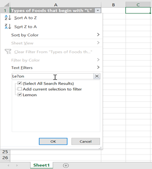 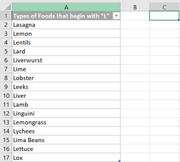We can also use “?” multiple times to represent multiple characters. For example, given the list of three letter words below, if we search “c??”, Excel will return all the three letter words beginning with “c”.
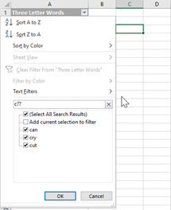 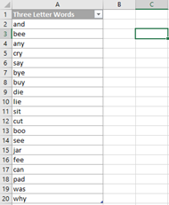The * (asterisk) acts as a stand in for a string of characters of any length. Looking at the list of A24 movies below, if we search for “Un*”, Excel will return a list of all the A24 movies beginning with “Un” and followed by any string of letters afterward. In this example, Excel will return “Under the Skin”, “Under the Silver Lake”, and “Uncut Gems”.
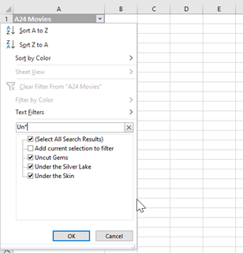 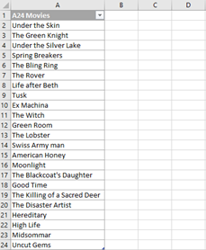The ~ (tilde) is used to indicate a literal asterisk, question mark, or a tilde, that is part of the search string and not identified as a wildcard. It signals that the asterisk, question mark, or tilde is actually part of the text you are searching for. Checking the list of phrases which contain wildcard characters below, when searching for a wildcard contained in the search criteria we can put the tilde before the wildcard character to configure the search function to identify the question mark character as a string, rather than a wildcard value. In the example below, searching for “~?” will return all values containing “?” within the string, so in this case “Question Mark?” will be returned.
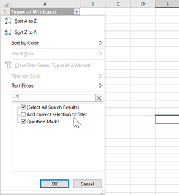| Popular Functions that Support Wildcard Characters |
|---|
| AVERAGEIF |
| AVERAGEIFS |
| COUNTIF |
| COUNTIFS |
| VLOOKUP |
| HLOOKUP |
| MATCH |
| MAXIFS |
| MINIFS |
| SEARCH |
| SEARCHB |
| SUMIF |
| SUMIFS |
*The complete list can be found at https://exceluser.com/712/guide-to-using-wildcards-in-excel-worksheet-functions/
Using wildcard characters for search criteria can increase the flexibility of these functions. In the example below, we can see how using wildcard characters can be advantageous for finding statistics based on string patterns rather than exact matches. The first criteria table searches for strings beginning with “Da” within the search area, while the second criteria table, NOT using wildcards, searches for strings with an exact match to “Da”. Therefore the first criteria (using wildcards) returns 5 results (Davis, Davies, Davidson, Daisy, Da). Whereas the second criteria NOT using wildcards returns 1 result, since only one of the names is an exact match to “Da”.
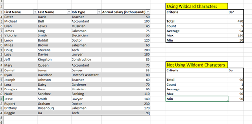Both VLOOKUPs and HLOOKUPs allow an approximate match mode, and using wildcard characters in this mode won’t return the correct accurate result every time. However when used in exact match mode (the fourth argument is false) wildcards allow for more specificity and precision in a search using either lookup function. Below are examples of VLOOKUP and HLOOKUP functions using a wildcard in the lookup value to search for string patterns.
For the VLOOKUP function, we use an asterisk to represent a string of characters when“M*s” is input as the lookup value. The third column has been inserted as the row index number to retrieve the job type of the first person whose name (of any length) begins with “M” and ends in “s”, then zero in the range lookup to ensure we are in exact match mode. The lookup identifies “Miles” as a match for the criteria given, and returns his job type, which is “Salesman”.
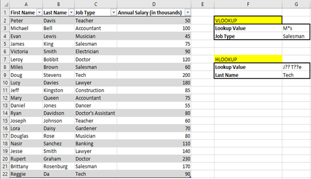 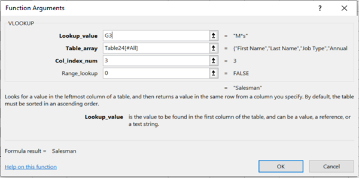For the HLOOKUP function example, several question marks are used as placeholders to stand in for individual characters. In the function below, the input for the lookup value field is “J?? T??e”, with row 9 as the row index number. The only value that matches the “J?? T??e” value is “Job Type”. The lookup retrieves the job type from row 9, which in this case is “Tech”.
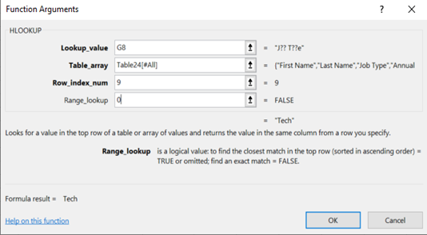MATCH does not have the same features as VLOOKUP and HLOOKUP. The MATCH function returns the location of the value being searched within a range of cells. Using a wildcard character in the lookup value argument will allow for more customizable searches and more specific search criteria. In the first example below, “L*y” is the lookup value, meaning we are looking for the position of the first text value of any length starting with L and ending in y, in the “First Name” column. Here the function will return 7, because “Leroy” is the first value to match the criteria going down the column in ascending order, and is located in the 7th row. For the second example, there is a lookup value of “Je??e”, which searches in the “First Name” column for the first text value that is exactly five characters long which starts with “Je” and ends with “e”. The MATCH function returns 19, because the first name “Jesse” is located in row 19 and is the first value in the row to meet the criteria of “Je??e”.
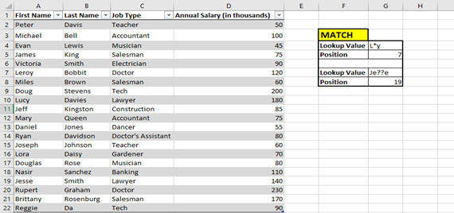Wildcards can be used in Excel search functions to identify patterns within strings, and return the position of the string pattern within the string. The first argument in the SEARCH function is the text we are trying to find, and the second argument is the text within which we are trying to find the first argument in. For the examples below, the first search function will show =SEARCH(G3, G4) and the second search function will be represented by =SEARCH(G7, G8). The wildcard characters are utilized within the first argument in both cases to identify the text pattern being searched for.
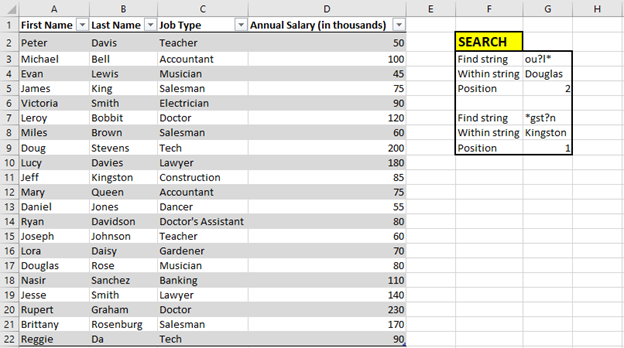Excel will return #VALUE! using the Excel SEARCH function if there is no matching string found when using any of the functions compatible with wildcard characters and their use cases.
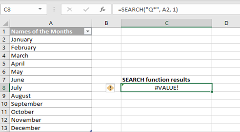